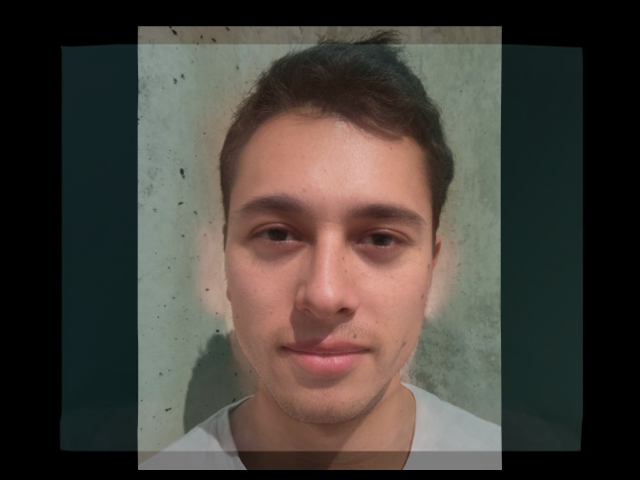
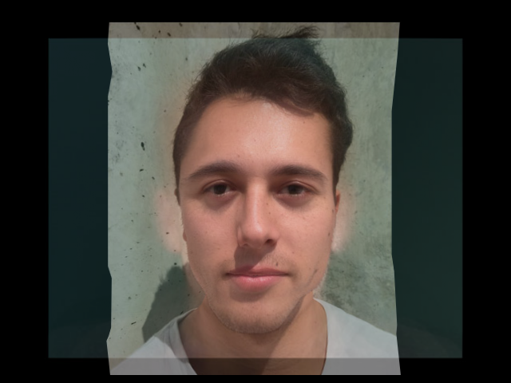

CS194-26 Proj 4: Face Morphing
Brian Aronowitz: 3032201719, cs194-26-aeh
Part 1: Midway Face
In this part of the project, we triangulate two faces with corresponding faces, and compute the midway face. This midway face consists of interpolating between the corresponding vertices on each face to find a midway set of vertices. We then Delaunay triangulate the face using scipy.spatial.Delaunay. This Delaunay triangulation defines the triangle set on both faces now. To get the midway face, we then look at all pixels in each triangle in the midway face. We convert these pixel coordinates to a barycentric coordinate. We then go back to the corresponding point in each of the triangles in the original two images, and interpolate accordingly.
Here is a midway face, of me and Taylor swift.
Part 2: Morph sequence
This morph sequence requires a small tweak in the part 1 code. Instead of averaging the points in the initial midway face calculation, the 'midway' face is created by weighting values of either the right or left image. This weight defines the interpolation. We smoothly interpolate using a value t, from 1.0/45.0 to 1.
Part 3: Average face
This part consists of calculating an average face. I use the Danes dataset, which consists of 40 images of Danish people, presumably. I parse the points, then calculate an average face from all 40 point sets. Then I weight the alphas by 1/N (where N) is the number of images.
Part 3.1: Morphing Faces into Average
This part just consists of morphing Dane faces into the average
Part 3.2: Caricature
This part consists of morphing my face into the average, with different interpolation weights on the midpoint face. The pictures are from .1, .8, and .9 (where higher numbers indicates higher values from the average face)
|

|

|

|
Part 4: Bell and Whistle: Earth Animation
I made a morph sequence showing earth decaying over time, then coming back alive as humans leave.
Conclusion
Although the idea of face morphing is quite cool, at it's core it feels a bit hollow. It felt like the algorithm lacked quite a bit of flexibility, which I would argue is the key to good artistic tools.
I've been kind of stumped on making cool stuff for most of these projects. I come from a 3D rendering, drawing and painting background, things that are almost infinitely flexible in the things you can do with them. With purely pixel approaches, (like in these past projects) coming up with cool things has been difficult for me. It seems like the algorithms lack understanding of high level structure in the images. Combined with this lack of ability to manipulate high level structures in an intuitive way, the algorithms also do not run in a realtime, interactive way, which is something that makes almost every physical medium as intuitive and powerful as they are.